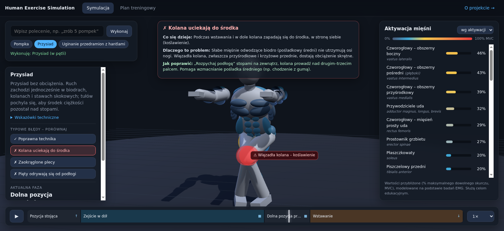
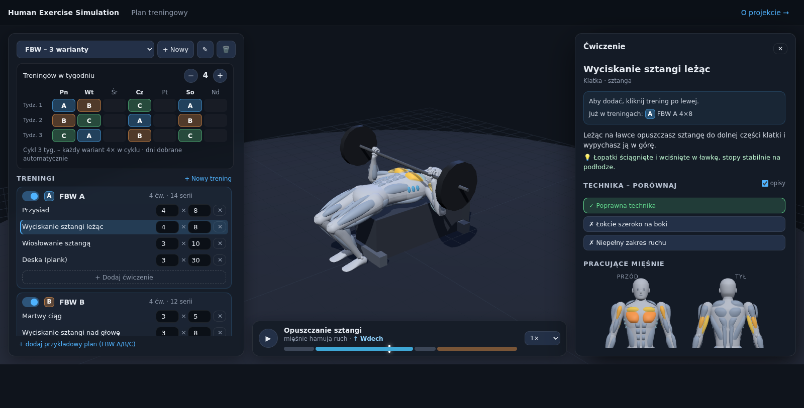
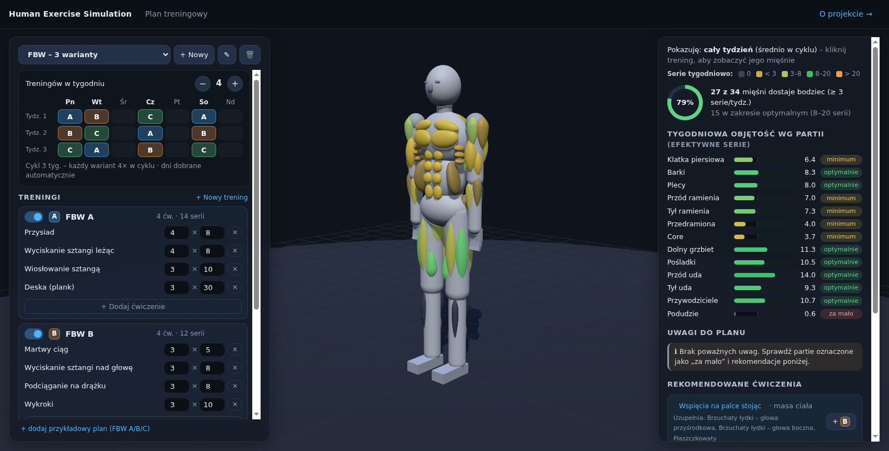
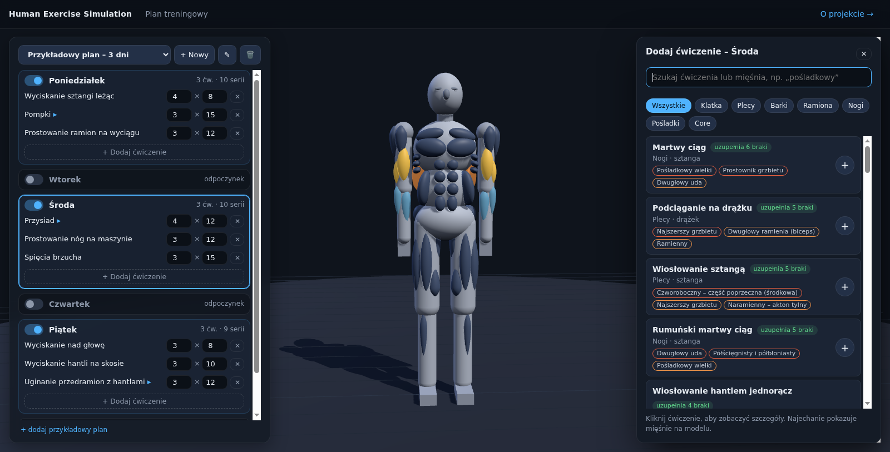

Jak to wygląda
Zrzuty ekranu z aktualnej wersji demo.





Human Exercise Simulation to aplikacja dla osób, które chcą ułożyć sensowny plan treningowy i zrozumieć, co dokładnie trenują. Planer pokazuje na modelu 3D, które mięśnie dostają bodziec w ciągu tygodnia, ostrzega przed zaniedbanymi partiami i podpowiada ćwiczenia. Każde ćwiczenie można obejrzeć w animacji, z prostą mapą pracujących mięśni i typowymi błędami techniki. Bez żargonu i bez zasypywania liczbami.
Zrzuty ekranu z aktualnej wersji demo.




Dlaczego to ma sens.
Atlasy anatomiczne i filmy treningowe pokazują albo ruch, albo mięśnie, i to statycznie. Trudno zrozumieć, że ten sam mięsień pracuje inaczej przy opuszczaniu i wypychaniu ciała ani dlaczego najtrudniejszy jest dół pompki. Aplikacje treningowe z kolei dają listę ćwiczeń, ale nie mówią, czy plan rozwija całe ciało równomiernie.
Łączymy ruch i fizjologię w jednej, interaktywnej scenie. Każda klatka animacji ma przypisaną aktywację każdego mięśnia. Można zatrzymać ruch, przewinąć do konkretnej fazy i obejrzeć model z dowolnej strony.
Tłumaczenie techniki i celu ćwiczenia podopiecznym.
Pokazanie pacjentowi, co dokładnie wzmacnia dane ćwiczenie.
Anatomia funkcjonalna dla studentów AWF, fizjoterapii i medycyny.
Silnik wizualizacji osadzany w istniejących aplikacjach treningowych.
Architektura: trzy niezależne warstwy, z których każdą można później wymienić na dokładniejszą, oraz planer korzystający z tych samych danych o mięśniach.
Ćwiczenie to fazy ruchu plus kinematyka odwrotna (IK): dłonie i stopy stoją w miejscu, reszta ciała się dopasowuje.
Aktywacja każdego mięśnia zależy od głębokości ruchu i typu skurczu (koncentryczny, ekscentryczny, izometryczny), skalibrowana na danych EMG.
Docelowo: symulacja biomechaniczna.
Three.js w przeglądarce: kolor mięśnia od niebieskiego do czerwonego, statyczna figura z rolami mięśni, oś czasu faz, oddech i znaczniki przeciążeń.
Każde ćwiczenie w katalogu ma wagę zaangażowania mięśni: 1 dla mięśnia głównego, 0,5–0,75 dla pomocniczego, 0,25 dla stabilizującego. Tygodniowa objętość mięśnia to suma serie × waga („efektywne serie”). Porównujemy ją z orientacyjnymi progami (3 / 8 / 20 serii) i sprawdzamy proporcje oraz regenerację. Algorytm zachłannie dobiera ćwiczenia, które najlepiej pokrywają braki. Wszystko działa lokalnie, bez serwera.
GOTOWE działa w demo · W TRAKCIE następne w kolejce · PLANOWANE na roadmapie
| Status | Funkcja | Opis |
|---|---|---|
| GOTOWE | Model 3D człowieka | Stylizowany manekin ze szkieletem (14 stawów) i 34 mięśniami z podziałem na głowy i części: 4 głowy czworogłowego, 3 aktony naramiennego, 3 części czworobocznego, 2 głowy tricepsa i inne. Mięśnie mają kształt wrzecion i łez, a mięsień prosty brzucha pokazany jest jako „kaloryfer”. |
| GOTOWE | Animacje wszystkich 48 ćwiczeń | Każde ćwiczenie katalogu ma animację na modelu, z rekwizytami (sztanga, hantle, wyciąg, ławki, drążek, maszyny). Dłonie mają ruchome palce, które zaciskają się na sztandze, hantlu czy drążku. Animacja odtwarza się na modelu w planie, z paskiem faz (pauza, przewijanie, tempo), wskazówkami technicznymi i oddechowymi. |
| GOTOWE | Pracujące mięśnie – prosto | W animacji kolor mięśni zmienia się z fazą ruchu. W panelu statyczna figura (przód i tył) i krótka lista: które mięśnie pracują najmocniej i które uzupełniają braki w Twoim planie – bez procentów i bez długich list. Rolę każdego mięśnia widać po najechaniu. |
| GOTOWE | Łatwe wskazywanie mięśni | Najechanie kursorem na mięsień (na modelu lub na figurze) pokazuje jego nazwę i rolę w ćwiczeniu. Mięśnie nachodzące na siebie (np. głowy czworogłowego) są rozróżniane po tym, który jest najbliżej kursora. |
| GOTOWE | Oddech | Klatka piersiowa i brzuch rozszerzają się przy wdechu, przy wydechu widać obłoczki. Oddech jest zsynchronizowany z fazami ruchu (np. wydech przy wypychaniu), a pasek odtwarzania pokazuje bieżący wdech / wydech. |
| GOTOWE | Typowe błędy techniki | 93 błędy we wszystkich 47 ćwiczeniach (np. okrągłe plecy w martwym ciągu, łokcie szeroko przy wyciskaniu, ściąganie za kark, przeprost w hip thruście, opadające biodra w desce). Płynne przejście między techniką poprawną i błędną, zmiana aktywacji mięśni, czerwone znaczniki przeciążonych struktur oraz opis: co się dzieje, dlaczego to problem i jak poprawić. Błąd wybiera się jednym kliknięciem w panelu ćwiczenia, a opis można wyłączyć. |
| GOTOWE | Plan treningowy: treningi + harmonogram | Treningi to bloki ćwiczeń niezależne od dni (np. „FBW A”, „FBW B”, „FBW C”). W planie wybierasz, które warianty biorą udział i ile treningów chcesz w tygodniu – aplikacja sama układa cykl tak, by każdy wariant wypadał tyle samo razy (np. 4 treningi i 3 warianty → cykl 3 tygodni, każdy wariant 4×), dobierając dni i kolejność tak, by treningi dzień po dniu jak najmniej obciążały te same mięśnie. Dni można też ustawić ręcznie. Jeden ekran: plan, model i szczegóły ćwiczenia. |
| GOTOWE | Katalog 48 ćwiczeń | Ćwiczenia z wagą zaangażowania każdego mięśnia i krótkim opisem dla laika. Wyszukiwanie po nazwie i mięśniu, filtr kategorii, podgląd mięśni na modelu, szybkie dodawanie przyciskiem +. |
| GOTOWE | Analiza planu offline | Tygodniowa objętość (efektywne serie) na mięsień i partię, mapa na modelu 3D (tydzień lub pojedynczy dzień) i ocena pokrycia. Ostrzeżenia: proporcje pchanie/przyciąganie i przód/tył uda, regeneracja dzień po dniu, brak dnia wolnego, za długi trening. |
| GOTOWE | Rekomendacje ćwiczeń | Algorytm dobiera ćwiczenia pokrywające zaniedbane mięśnie i proponuje dzień, który najmniej koliduje z regeneracją. Dodanie jednym kliknięciem. |
| W TRAKCIE | Płynniejszy ruch | Więcej póz kluczowych w animacjach (dziś ruch to przejście między dwiema pozami), ruch nadgarstków i obrót dłoni. |
| PLANOWANE | Realistyczny model anatomiczny | Siatka z dokładnymi kształtami mięśni (np. na bazie Z-Anatomy) zamiast manekina. |
| PLANOWANE | Symulacja biomechaniczna | Aktywacje liczone z fizyki ruchu (OpenSim / MuJoCo MyoSuite) zamiast krzywych z literatury. |
| PLANOWANE | Progresja i historia treningów | Odhaczanie wykonanych treningów, ciężary, progresja obciążenia, kalendarz z historią. |
| PLANOWANE | Analiza techniki z kamery | Estymacja pozy z wideo użytkownika i automatyczne wykrywanie błędów z katalogu „typowych błędów”. |
| PLANOWANE | Wersja angielska | Interfejs w języku angielskim. |
Od demonstratora do narzędzia edukacyjnego opartego na nauce.
Uczciwie o tym, co model potrafi dziś.
Wartości aktywacji w MVP to uproszczony model. Poziomy szczytowe są inspirowane zakresami raportowanymi w badaniach EMG (wyrażonymi jako % MVC), a przebieg w czasie wynika z głębokości ruchu i typu skurczu. Nie są to pomiary ani wynik symulacji fizycznej. Przed użyciem w celach klinicznych wymagają weryfikacji przez eksperta.
| Data | Wersja | Zmiany |
|---|---|---|
| 24.11.2026 | 0.9.1 | Suwnica: płyta leży płasko pod podeszwami (stopy już w nią nie wchodzą). Drążek do zwisu wyżej – stopy nie dotykają podłogi. Błąd „bujanie” przy unoszeniu nóg w zwisie jest prawdziwym ruchem wahadła: zamach w tył, wyrzut nóg i wymach. Test fizyki: stopy na płycie suwnicy, stopy w powietrzu w zwisie. Widok na telefon: model u góry, plan i analiza w zakładkach pod nim – aplikacja nadaje się do użycia na siłowni. |
| 24.11.2026 | 0.9.2 | Przykładowe plany: dołączony plan „julo – A/B” (dwa treningi po 7 ćwiczeń) obok FBW A/B/C. Przycisk „dodaj przykładowe plany” dokłada tylko te, których jeszcze nie ma – bez duplikatów. |
| 24.11.2026 | 0.9.3 | Prostszy podgląd ćwiczenia: zamiast osi faz tylko pauza i tempo. Telefon: kliknięcie ćwiczenia w planie nie zasłania planu – model zaczyna ćwiczyć, a opis, błędy techniki i mięśnie otwierają się przyciskami pod modelem (jedna sekcja naraz, bez długiego przewijania). Jaśniejsze, szaroniebieskie tło – ciemne obciążniki są lepiej widoczne. |
| 24.11.2026 | 0.9.4 | Fizyka: suwnica jedzie po prowadnicach (stopy po prostej, kolana bez przeprostu), błąd „za głęboko” pokazuje podwinięcie miednicy zamiast uda wchodzącego w brzuch. Plecy przy oparciu w maszynach. Lepiej widoczne błędy: opadające nadgarstki w uginaniu nachwytem (mniejsze talerze, kamera z boku), kolana do środka (suwnica, hip thrust, chodzenie z gumą), wyrzucanie nóg w prostowaniu. Test fizyki sprawdza nowe reguły: zakres ruchu w stawach, plecy na oparciu, prowadnice suwnicy i to, czy każdy błąd jest widoczny. |
| 24.11.2026 | 0.9.5 | Lista ćwiczeń bez tekstów-podpowiedzi i ciaśniej na telefonie. Wydech lepiej widoczny: z ust wypływa biały, rozpływający się obłoczek (dawne drobne kropki ginęły na jaśniejszym tle). |
| 24.11.2026 | 0.9.6 | Wydech widać na twarzy: usta płynnie otwierają się w lekkie „o” (wydmuchiwanie powietrza) i zamykają po wydechu; obłoczki przy ustach delikatniejsze. |
| 24.11.2026 | 0.10 | Twoja twarz na modelu (przycisk 🙂): wybierasz zdjęcie, dotykasz twarzy (przybliżenie), potem oczu, nosa i ust. Twarz jest prostowana (przechył i obrót głowy), dopasowana do kształtu głowy i podana w odcieniu skóry modelu; przy wydechu usta lekko się otwierają. Zdjęcie nie opuszcza urządzenia – w przeglądarce zostaje tylko gotowa tekstura twarzy. |
| 27.11.2026 | 0.18.0 | Zapis treningu: w kalendarzu „Zacznij trening” (albo „Zapisz wykonany trening” na miniony dzień) tworzy trening dnia z ćwiczeń planu, z podpowiedzią ostatnio użytego ciężaru. W treningu: powtórzenia / sekundy i kg dla każdej serii, odhaczanie serii, dodawanie i usuwanie ćwiczeń i serii tylko w tym dniu (plan się nie zmienia), zakończenie treningu. Kalendarz oznacza dni wykonane (✓) i w trakcie (●). Treningi zapisują się na koncie; przy zmianach na dwóch urządzeniach wygrywa nowsza wersja danego dnia. |
| 27.11.2026 | 0.17.0 | Kalendarz: miesiąc z treningami z planu (litera i kolor wariantu, dziś wyróżnione). Kliknięty dzień pokazuje swój trening z ćwiczeniami, a model – jego mięśnie; dni bez treningu to odpoczynek. Komputer: przełącznik Plan / Kalendarz w lewym panelu, telefon: zakładka Kalendarz. |
| 27.11.2026 | 0.16.0 | Jednostki serii: deska i deska bokiem w sekundach (domyślnie 3 × 30 s), spacer farmera w sekundach (3 × 40 s), chodzenie z gumą w krokach – w planie, na liście ćwiczeń i przy szybkim dodawaniu. Przygotowanie pod zapis treningu (kalendarz, ciężary). |
| 27.11.2026 | 0.15.2 | Odwodzenie i przywodzenie nóg na maszynie: widać opór – poduszki na dźwigniach przy kolanach (po zewnętrznej / wewnętrznej stronie) i stos ciężarów, który unosi się w trakcie ruchu. Przy przywodzeniu kolana schodzą się do styku poduszek. Test fizyki pilnuje, żeby poduszki nie wchodziły w uda ani w siebie. |
| 25.11.2026 | 0.15.1 | Telefon: zakładki Plan/Analiza znikają tylko wtedy, gdy coś zasłania plan (lista ćwiczeń, ćwiczenie z listy, rozwinięty opis / błędy / mięśnie). Przy ćwiczeniu wybranym z planu, gdy plan jest widoczny, zakładki zostają. |
| 25.11.2026 | 0.15.0 | Synchronizacja odporna na kilka kart i stare wersje: karty tej samej przeglądarki od razu przejmują od siebie zmiany (żadna nie cofa zmian drugiej); baza odrzuca zapis ze starszej wersji aplikacji, a otwarta karta sama aktualizuje się do nowej wersji (przy powrocie do niej). Telefon: przy liście ćwiczeń (na mięsień albo do dodania) nie ma zbędnych zakładek Plan/Analiza – tak jak przy otwartym ćwiczeniu. Testy przed wdrożeniem trwają ok. 30 s zamiast kilkunastu minut. |
| 25.11.2026 | 0.14.2 | Logowanie na konto z planami pokazuje od razu wyłącznie plany z konta – plan ułożony jako gość nie dołącza się do nich (trafia na konto tylko, gdy konto jest nowe albo puste). |
| 25.11.2026 | 0.14.1 | Bez logowania ekran wczytywania znika zawsze zaraz po narysowaniu planu (nie czeka na usługę logowania). |
| 25.11.2026 | 0.14.0 | Sylwetka (mężczyzna / kobieta) zapisuje się na koncie – po zalogowaniu wszędzie ta sama, zmiana na telefonie od razu widoczna na komputerze. Synchronizacja odporna na zmianę kolejności pól w bazie (urządzenia nie odsyłają sobie danych w kółko). |
| 25.11.2026 | 0.13.3 | Start aplikacji bez migania: od pierwszej chwili ekran wczytywania (nazwa aplikacji i kółko), który znika dopiero, gdy widać właściwy stan – u zalogowanych konto i plany z konta, u gościa gotowy plan i model. |
| 25.11.2026 | 0.13.2 | Bezpieczny zapis na koncie: urządzenie zmienia plany na koncie tylko wtedy, gdy zna ich aktualną wersję – inaczej najpierw pobiera konto i scala zmiany (koniec nadpisywania planów „na ślepo”, np. przy logowaniu). Pusty stan nie trafia na konto, chyba że sam usuniesz ostatni plan; przed zastąpieniem planów w przeglądarce zostaje kopia. Wylogowanie pokazuje ekran „Wylogowuję…” zamiast pustych pól. |
| 25.11.2026 | 0.13.1 | Wylogowanie zawsze działa: nie zawiesza się przy braku sieci albo trwającej synchronizacji, czyści sesję i dane konta z przeglądarki i wraca do „Mój plan” gościa (wylogowuje tylko to urządzenie). Testy przed każdym wdrożeniem: fizyka ćwiczeń dla obu sylwetek i podstawowe funkcje aplikacji – strona aktualizuje się tylko, gdy wszystkie przejdą. |
| 25.11.2026 | 0.13.0 | Sylwetka kobiety: w ustawieniach (⚙) przełącznik Mężczyzna / Kobieta – model zmienia się od razu (węższa talia, szersze biodra, piersi, włosy), ruchy i test fizyki te same. Bez logowania od razu jest „Mój plan” z pustym treningiem do wypełnienia; kolejne plany po zalogowaniu (plan gościa trafia wtedy na konto). Po zalogowaniu ekran wczytywania, aż przyjdą plany z konta – bez migania nieaktualnymi danymi. |
| 25.11.2026 | 0.12.2 | Kliknięcie mięśnia na modelu otwiera listę „Ćwiczenia na: …” – od najmocniej go angażujących, z oznaczeniem główny / pomocniczy / lekko i szybkim dodaniem do treningu. |
| 25.11.2026 | 0.12.1 | Wskazanie mięśnia na modelu podświetla w planie ćwiczenia, które go angażują – kolor paska wg udziału (główny / pomocniczy), pozostałe ćwiczenia przygaszone. |
| 25.11.2026 | 0.12.0 | Nowe ćwiczenie: odwodzenie nóg na maszynie (odwodziciele biodra) z animacją i typowymi błędami; pośladkowy średni opisany jako „odwodziciel biodra”, wyszukiwanie po „odwodziciel”, „biodro”, „abduction”. Analiza nie chowa słabych ogniw: status partii wyznacza najsłabszy mięsień (z dopiskiem „najsłabiej: …”), osobna uwaga o mięśniach poniżej minimum z propozycją ćwiczenia. |
| 25.11.2026 | 0.11.5 | Nowa wersja aplikacji wczytuje się od razu po odświeżeniu (bez kilkuminutowej pamięci podręcznej przeglądarki). |
| 25.11.2026 | 0.11.4 | Telefon: przy otwartym ćwiczeniu zamiast zakładek Plan/Analiza jest pasek „+ Dodaj do: trening” (przycisk nie powtarza się nad każdą sekcją). Rekomendacje celują w optimum: gdy wszystkie mięśnie mają minimum, proponują ćwiczenia dla tych poniżej 8 serii tygodniowo. |
| 25.11.2026 | 0.11.3 | Uwagi do planu z propozycjami naprawy jednym kliknięciem: dodanie konkretnego ćwiczenia do najlepiej pasującego treningu (np. przewaga pchania → wiosłowanie), zmiana liczby treningów w tygodniu, dni z przerwami, mniej serii przy zbyt dużej objętości. Telefon: opis stukniętego mięśnia przypięty u góry ekranu (palec go nie zasłania) i zostaje po zdjęciu palca. |
| 25.11.2026 | 0.11.2 | Czysty start: bez przykładowych planów – nowy użytkownik widzi „Nie masz jeszcze planu” i sam tworzy swój. Wylogowanie czyści dane z urządzenia (zostają na koncie). |
| 25.11.2026 | 0.11.1 | Logowanie tylko przez Google (przycisk wg wytycznych Google, zdjęcie profilowe przy koncie). Zmiany planów na żywo między urządzeniami. Numer wersji i data w menu ⚙. |
| 25.11.2026 | 0.11.0 | Konto: logowanie przez Google, plany i treningi zapisują się na koncie i są na każdym urządzeniu – zmiana na telefonie pojawia się od razu na komputerze (na żywo) (Supabase; bez internetu zmiany czekają w telefonie). Aplikację można dodać do ekranu głównego telefonu (PWA) i otworzyć bez internetu. Lokalna baza testowa (supabase start) oddzielona od produkcyjnej. Górny pasek uproszczony: „Zaloguj się” (tylko konto) i ⚙ ustawienia z funkcjami pobocznymi (twarz na modelu, o projekcie). |
| 24.11.2026 | 0.10.1 | Spójne „bujanie” we wszystkich ćwiczeniach: ruch z pędem w czasie zamiast stałej pozy. Podciąganie – ciało buja się na drążku, nogi wyrzucane w przód tuż przed podciągnięciem; uginania (z hantlami, młotkowe, nachwytem) i unoszenie bokiem – przysiad tułowiem, wyrzut z odchyleniem w tył, odbicie. |
| 24.11.2026 | 0.9 | Audyt wiarygodności wszystkich 48 ćwiczeń i stałe reguły jakości. Naprawione dłonie (kciuk był po złej stronie) i jawny obrót przedramion: właściwy nachwyt/podchwyt/chwyt młotkowy w każdym ćwiczeniu, chwyt nie zmienia się w trakcie ruchu i nie ślizga po drążku, sztanga przy wyciskaniu w nasadzie dłoni, hantel w goblecie oparty na dłoniach, pięści w desce, uchwyty maszyn. Poprawione wymiary sprzętu (stopy nie przechodzą przez podnóżek, nogi przez siedzisko). Test fizyki sprawdza teraz też sprzęt (w tym drążki, poręcze i wałki, z zapasem na mięśnie), stopy i chwyt; podciąganie: klatka za drążkiem, broda nad nim; checklista ćwiczenia w README. Kamera zostaje w miejscu przy pokazywaniu błędu (porównanie 1:1). Po kliknięciu treningu analiza pokazuje mięśnie tego treningu, nie całego tygodnia. Nowy, realistyczny wygląd człowieka jest domyślny: dorosła, wysportowana sylwetka z gładką skórą, widocznymi stawami (rzepka, łokieć, kostki), dłońmi z palcami i wyraźnie zarysowanymi mięśniami (dawny ludzik: ?look=classic). |
| 24.11.2026 | 0.8 | Nowy model planu: treningi (warianty) zamiast ćwiczeń przypisanych do dni. Plan = wybrane warianty + liczba treningów w tygodniu; harmonogram (cykl wielotygodniowy) układa się automatycznie – każdy wariant tyle samo razy, dni i kolejność dobrane pod regenerację. Ręczna zmiana dni, analiza ze średniej cyklu, rekomendacje z podpowiedzią wariantu. Stare plany przenoszone automatycznie. Usunięte rozwijane „Wskazówki techniczne i oddech” (oddech jest na pasku faz). |
| 24.11.2026 | 0.7.1 | Stały chwyt na drążku: kinematyka odwrotna ramion – w wyciskaniu leżąc, ściąganiu drążka i face pullu zadajemy tor drążka i szerokość chwytu, a łokcie i barki dopasowują się same (koniec z „ślizganiem się” dłoni). Lina w face pullu rozkłada się razem z dłońmi. Nowe ćwiczenie: rumuński martwy ciąg z hantlami (48 ćwiczeń). |
| 24.11.2026 | 0.7 | Podstawowa fizyka ciała: bryły kolizyjne (głowa, szyja, klatka, brzuch, miednica, kończyny), solver odsuwający sztangę/uchwyt od ciała w każdej klatce (barki, łokcie, lekkie odchylenie tułowia – tak jak robi to ćwiczący) i automatyczny test całego katalogu: sprzęt nie wchodzi w ciało, dłonie nie wchodzą w tułów, nogi nie nachodzą na siebie, nic nie przechodzi przez podłogę. Przysiady z rozstawem na szerokość barków. Kliknięcie dnia pokazuje jego mięśnie na modelu, a „+ Dodaj ćwiczenie” otwiera listę ćwiczeń dla tego dnia. |
| 24.11.2026 | 0.6.1 | Dłonie obracają się tak, by drążek leżał w zgiętych palcach (koniec z drążkiem „przebijającym” dłonie). Tor drążka omija głowę (poza pośrednia w ściąganiu), a sztanga w przysiadzie frontowym leży na barkach. Automatyczny test kolizji drążka z głową dla wszystkich ćwiczeń i błędów (tools/sheet.html?check). Ściąganie drążka zgodne z klasyczną techniką. To samo ćwiczenie nie może trafić dwa razy do jednego dnia. Pasek faz bez ucinania tekstu. |
| 24.11.2026 | 0.6 | Typowe błędy techniki dla wszystkich 47 ćwiczeń (93 błędy): zmiana ruchu na modelu, zmiana pracy mięśni, znaczniki przeciążeń i opis „co się dzieje / dlaczego / jak poprawić”. Dłonie z palcami zaciskającymi się na sprzęcie; w goblet squacie i prostowaniu ramion nad głową dłonie trzymają hantel oburącz. |
| 24.11.2026 | 0.5 | Katalog rozszerzony do 47 ćwiczeń (m.in. wyciskanie hantli na płaskiej, goblet squat, przysiad frontowy, suwnica, wiosłowanie na wyciągu i na ławce skośnej, ściąganie szerokim chwytem, rozpiętki na wyciągu, wyciskanie hantli nad głowę). Animacje dla wszystkich ćwiczeń: silnik póz kluczowych z obrotami w trzech osiach, kotwicami (dłonie na drążku, stopy na podłodze) i rekwizytami (sztanga, wyciąg, płyta suwnicy, guma, wałki maszyn) oraz scenografią (ławki, drążek, poręcze, maszyny). |
| 24.11.2026 | 0.4 | Jeden interfejs: osobny widok symulacji usunięty, wszystko dzieje się w planie. Kliknięcie ćwiczenia w planie wybiera je i pokazuje szczegóły; dodawanie przez zaznaczenie dnia w planie i „Dodaj do: …”. Typowe błędy klikalne w panelu ćwiczenia (animacja, znaczniki przeciążeń). Długą listę mięśni zastąpiła figura przód/tył i krótkie podsumowanie. Pasek odtwarzania z fazami i oddechem pod modelem. |
| 24.11.2026 | 0.3.1 | Szczegóły ćwiczenia w panelu wyboru, bez wychodzenia z planu: animacja na modelu, opis i wskazówka, mięśnie wg roli, wpływ na plan, dodanie do dowolnego dnia z seriami × powtórzeniami. Panel nie przyciemnia już modelu – można go obracać. Opisy dla wszystkich 38 ćwiczeń katalogu. |
| 24.11.2026 | 0.3 | Kierunek: aplikacja dla osób układających plan i poznających mięśnie. Usunięte polecenia tekstowe (wybór ćwiczenia przyciskiem). Zamiast skaczących procentów: statyczna figura przód/tył i podział mięśni na pracujące najmocniej / pomagające / trzymające pozycję. Podgląd ćwiczenia bezpośrednio w planie. Opis błędu techniki przeniesiony do panelu, z opcją wyłączenia. Naprawione odwrócone bryły mięśni kończyn (były prawie niewidoczne) i dokładniejsze wskazywanie nachodzących na siebie mięśni. |
| 23.11.2026 | 0.2 | Model z 34 mięśniami (podział na głowy i części, kształty wrzecionowate), animacja oddechu zsynchronizowana z fazami, typowe błędy techniki (8 błędów w 3 ćwiczeniach) ze znacznikami przeciążeń, planer treningowy z katalogiem 38 ćwiczeń, mapą obciążenia na modelu, analizą i rekomendacjami offline. Nawigacja Symulacja / Plan. |
| 23.11.2026 | 0.1 | Pierwsze MVP: manekin 3D z 17 grupami mięśni, pompka, przysiad i uginanie przedramion, aktywacje na żywo, oś faz, polecenia tekstowe po polsku, strona projektu. |